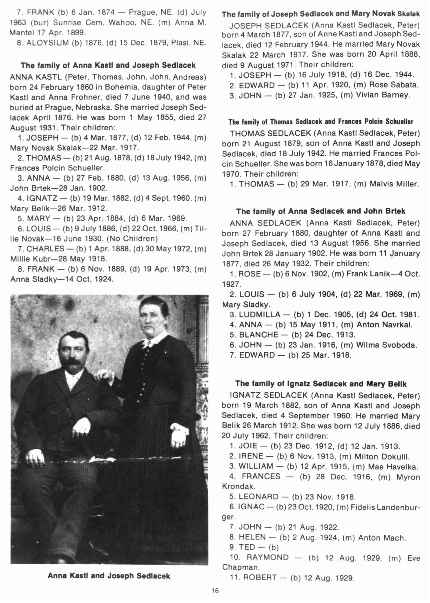

The book · The Family of Peter Kastl
Page 16 The family of Anna Kastl and Joseph Sedlacek


Transcription
- FRANK (b) 6 Jan. 1874 — Prague, NE. (d) July 1963 (bur) Sunrise Cem. Wahoo, NE. (m) Anna M. Mantel 17 Apr. 1899.
- ALOYSIUM (b) 1876, (d) 15 Dec. 1879, Plasi, NE.
The family of Anna Kastl and Joseph Sedlacek
ANNA KASTL (Peter, Thomas, John, John, Andreas) born 24 February 1860 in Bohemia, daughter of Peter Kastl and Anna Frohner, died 7 June 1940, and was buried at Prague, Nebraska. She married Joseph Sedlacek April 1876. He was born 1 May 1855, died 27 August 1931. Their children:
- JOSEPH — (b) 4 Mar. 1877, (d) 12 Feb. 1944, (m) Mary Novak Skalak—22 Mar. 1917.
- THOMAS — (b) 21 Aug. 1878, (d) 18 July 1942, (m) Frances Polcin Schueller.
- ANNA — (b) 27 Feb. 1880, (d) 13 Aug. 1956, (m) John Brtek—28 Jan. 1902.
- IGNATZ — (b) 19 Mar. 1882, (d) 4 Sept. 1960, (m) Mary Belik—26 Mar. 1912.
- MARY — (b) 23 Apr. 1884, (d) 6 Mar. 1969.
- LOUIS — (b) 9 July 1886, (d) 22 Oct. 1966, (m) Tillie Novak—16 June 1930. (No Children)
- CHARLES — (b) 1 Apr. 1888, (d) 30 May 1972, (m) Millie Kubr—28 May 1918.
- FRANK — (b) 6 Nov. 1889, (d) 19 Apr. 1973, (m) Anna Sladky—14 Oct. 1924.

The family of Joseph Sedlacek and Mary Novak Skalak
JOSEPH SEDLACEK (Anna Kastl Sedlacek, Peter) born 4 March 1877, son of Anne Kastl and Joseph Sedlacek, died 12 February 1944. He married Mary Novak Skalak 22 March 1917. She was born 20 April 1888, died 9 August 1971. Their children:
- JOSEPH — (b) 16 July 1918, (d) 16 Dec. 1944.
- EDWARD — (b) 11 Apr. 1920, (m) Rose Sabata.
- JOHN — (b) 27 Jan. 1925, (m) Vivian Barney.
The family of Thomas Sedlacek and Frances Polcin Schueller
THOMAS SEDLACEK (Anna Kastl Sedlacek, Peter) born 21 August 1879, son of Anna Kastl and Joseph Sedlacek, died 18 July 1942. He married Frances Polcin Schueller. She was born 16 January 1878, died May 1970. Their children:
- THOMAS — (b) 29 Mar. 1917, (m) Malvis Miller.
The family of Anna Sedlacek and John Brtek
ANNA SEDLACEK (Anna Kastl Sedlacek, Peter) born 27 February 1880, daughter of Anna Kastl and Joseph Sedlacek, died 13 August 1956. She married John Brtek 28 January 1902. He was born 11 January 1877, died 26 May 1932. Their children:
- ROSE — (b) 6 Nov. 1902, (m) Frank Lanik—4 Oct. 1927.
- LOUIS — (b) 6 July 1904, (d) 22 Mar. 1969, (m) Mary Sladky.
- LUDMILLA — (b) 1 Dec. 1905, (d) 24 Oct. 1981.
- ANNA — (b) 15 May 1911, (m) Anton Navrkal.
- BLANCHE — (b) 24 Dec. 1913.
- JOHN — (b) 23 Jan. 1916, (m) Wilma Svoboda.
- EDWARD — (b) 25 Mar. 1918.
The family of Ignatz Sedlacek and Mary Belik
IGNATZ SEDLACEK (Anna Kastl Sedlacek, Peter) born 19 March 1882, son of Anna Kastl and Joseph Sedlacek, died 4 September 1960. He married Mary Belik 26 March 1912. She was born 12 July 1886, died 20 July 1962. Their children:
- JOIE — (b) 23 Dec. 1912, (d) 12 Jan. 1913.
- IRENE — (b) 6 Nov. 1913, (m) Milton Dokulil.
- WILLIAM — (b) 12 Apr. 1915, (m) Mae Havelka.
- FRANCES — (b) 28 Dec. 1916, (m) Myron Krondak.
- LEONARD — (b) 23 Nov. 1918.
- IGNAC — (b) 23 Oct. 1920, (m) Fidelis Landenburger.
- JOHN — (b) 21 Aug. 1922.
- HELEN — (b) 2 Aug. 1924, (m) Anton Mach.
- TED — (b)
- RAYMOND — (b) 12 Aug. 1929, (m) Eve Chapman.
- ROBERT — (b) 12 Aug. 1929.
Transcriber’s notes
Top of left column continues the child list of Peter Kastl and Anna Frohner from p.15 (children 7-8). In the heading 'The family of Joseph Sedlacek and Mary Novak Skalak', 'Skalak' is set in smaller type; the Thomas Sedlacek heading is set in a condensed face. Print spellings kept: 'Anne Kastl' (Joseph Sedlacek entry), 'ALOYSIUM'. Children 10 and 11 of Ignatz Sedlacek both have (b) 12 Aug. 1929 as printed; child 9 TED has an empty birth date.